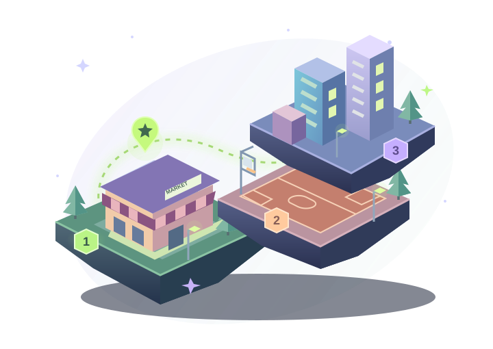

TRANSITION TOWN · NUMBER ADVENTURES
A small count.
A big adventure.
Light up your town, one number at a time.
Your pace. Every try counts.

TOUCH. COUNT. DISCOVER.1 → 100 Your adventure starts hereCHOOSE YOUR STARTING POINT
Your adventure map
Keep exploring Original 21–100 levels
Choose a mission. Start with touch & count, or practice any skill.
MISSION COMPLETE